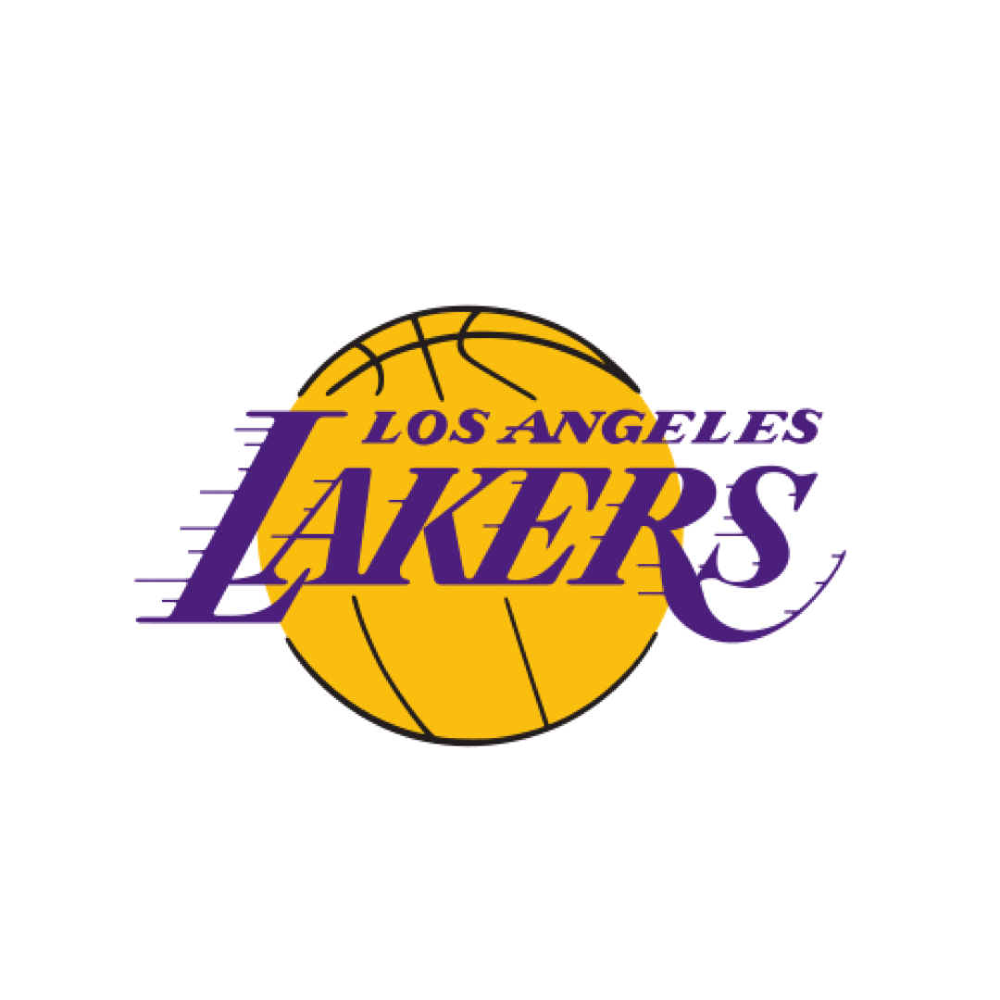

History
Golden State Warriors, American professional basketball team based in San Francisco that plays in the Western Conference of the National Basketball Association (NBA). The Warriors have won six NBA championships and one Basketball Association of America (BAA) title.
The Warriors were founded in 1946 and were originally based in Philadelphia. One of the original members of the BAA, the team won the league’s first championship behind the play of future Hall of Fame forward Joe Fulks, the BAA’s inaugural scoring leader. The Warriors lost in the BAA finals the next season, and in 1949 the team became a part of the NBA when the BAA merged with the National Basketball League (NBL). The Warriors finished higher than fourth place in their division just once in their first six seasons in the new league. In 1955–56, however, the Warriors, led by forward Paul Arizin and centre Neil Johnston, posted the best record in the league and captured their first NBA title. Serena Williams poses with the Daphne Akhurst Trophy after winning the Women's Singles final against Venus Williams of the United States on day 13 of the 2017 Australian Open at Melbourne Park on January 28, 2017 in Melbourne, Australia. (tennis, sports) Britannica Quiz Great Moments in Sports Quiz
In 1959 Philadelphia added local product Wilt Chamberlain, who would go on to become one of the greatest players in NBA history. While with the Warriors, he famously scored an NBA-record 100 points in a 1962 contest, in what would prove to be the team’s final year in Philadelphia. A group of San Francisco Bay area investors purchased the franchise after the 1961–62 season and moved the team, which became known as the San Francisco Warriors.
The Warriors reached the NBA finals in 1964 with a team dominated by Chamberlain and in 1967 with a substantially rebuilt squad that featured forward Rick Barry, centre Nate Thurmond, and guard-forward Jeff Mullins, only to lose on each occasion. Barry, who had led the league in scoring in 1966–67, became one the first stars to leave the NBA for the upstart American Basketball Association, when he signed with the Oakland Oaks the next year.
Our legends

Rick Barry
Rick Barry, who played in the '60s and '70s, is a case of a player who was a victim of his era. An eight-time All-Star and a champion in his eight seasons with both the San Francisco and Golden State Warriors, Barry's skill set was unheralded at the time. He could seemingly shoot the ball from anywhere on the court, and from the charity stripe, he was as efficient as anyone in league history.
Barry shot 89.3 percent from the line for his career, and that was thanks to his strange yet highly effective shooting mechanics. Unlike most, he shot his free throws underhanded, and it obviously worked well for the forward, as he is eighth all-time in free throw percentage. With his elite perimeter shooting ability, it is fun to imagine how he would light up the scoreboard in today's pace-and-space style of play.
Wilt Chamberlain
Wilt Chamberlain was drafted by the Philadelphia Warriors in 1960, and as soon as he stepped on the court, it was clear that he was unlike anything the league had ever seen. Chamberlain stood at a massive 7-foot-1, yet he possessed the quickness and leaping ability of a guard.
Wilt the Stilt spent nearly six seasons as a member of the Warriors (also part of the San Francisco version), and he never averaged under 36.9 points per game. During the best year of his career, 1961-62, he scored 50.4 points and grabbed 25.7 boards in 48.5 minutes per night, which is higher than the 48 minutes in an NBA game that does not go into overtime.
Chamberlain was unable to win a title as a Warrior, in large part to the Boston Celtics led by Bill Russell, but the historic numbers that he put up will likely never be eclipsed.


Stephen Curry
Stephen Curry is not only the greatest shooter in franchise (and potentially league) history, but also the greatest Warrior ever. Since being drafted seventh overall by Golden State in the 2009 NBA Draft, he has won two MVPs, four championships, and he's been named to the All-Star team eight times.
The two-time scoring champion passed fellow great Ray Allen for the most 3-point field goals made by a single player in NBA history. Unlike the others on this list, Curry will certainly have the chance to add even more to his legacy with the Dubs (and it likely won't be long until Klay Thompson joins him on this list).
The last matches
| 101-122 | Lakers | |
| 121-106 | Lakers | |
| 101-104 | Lakers | |
| 97-127 | Lakers | |
| 127-100 | Lakers |